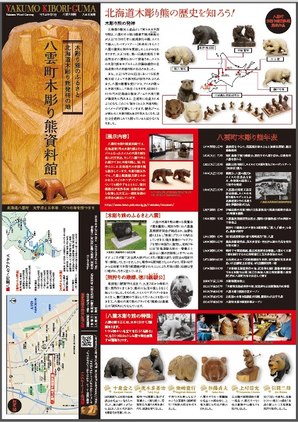
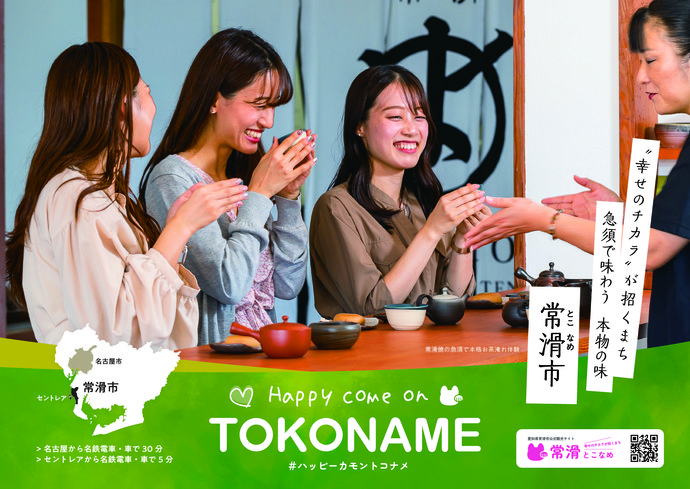
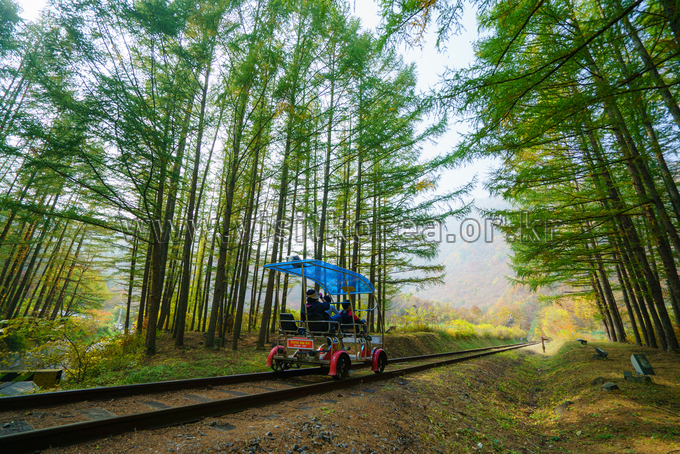
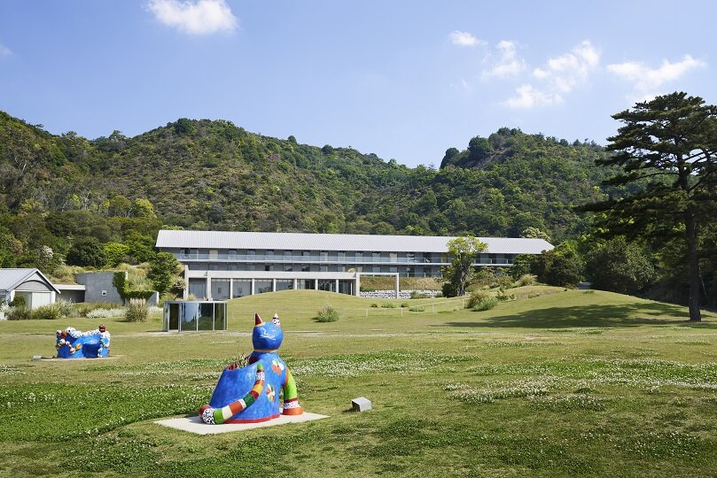
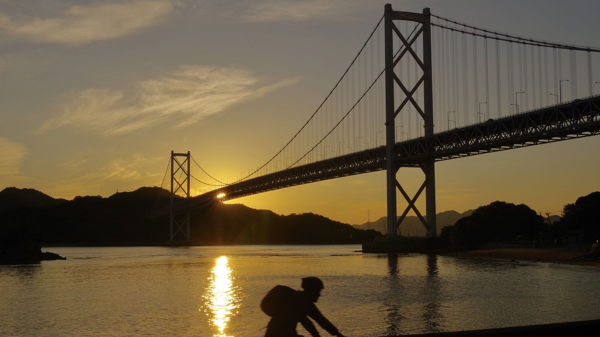
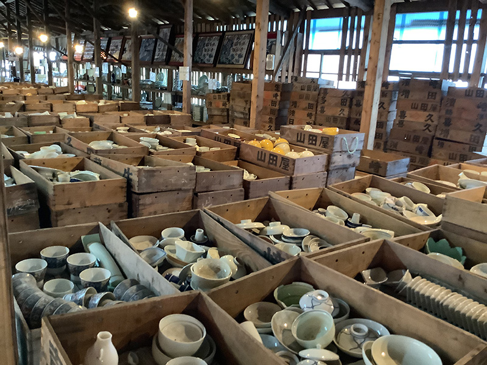

聖公会大学 ｜ 2026年度 後期 ｜ 4週目
01
日本観光サービス
キャップストーンデザイン
観光サービスの事例と政策の具体化
担当 崔ナリ
2週目の振り返り
02
観光政策から、観光サービスへ
- 観光需要の地方分散
- 新しい訪問先の創出
- 地域資源のコンテンツ化
- 実際に訪れる「理由」づくり
今日の問い
03
政策の具体化
政策は、実際の観光サービスになると、
どんな形になるのでしょうか。
有名な観光地がない地域では、何で観光客を呼び込める？
観光庁 ｜ 2026年 新創出型
04
地域資源を転換する四つの方法
01課題・環境条件→体験
02暮らし・生業・人→体験
03既存の空間→新しいアクセス
04点在する資源→一つの体験
採択事業をもとにした授業での整理採択事業一覧 ↗
新創出型 ｜ 課題・環境条件 → 体験
05
八雲「Living with Bears」
北海道・八雲町

地域の現実・知識・文化
ヒグマの出没
共生してきた地域の知識
木彫り熊の文化
現地で学ぶ研修型の観光体験
地域の課題や自然環境を、学ぶ体験へ
新創出型 ｜ 暮らし・生業・人 → 体験
06
常滑焼1000年の原点
愛知県・常滑市

地域の生業
やきもの
＋
非公開の工房
職人との対話
技術や人に直接触れる体験
名所や作品だけでなく、つくる現場へ
新創出型 ｜ 既存の空間 → 新しいアクセス
07
釧路空港・夜の滑走路体験
既存の空間
空港・滑走路
×
新しい利用条件
夜間
特別なアクセス
普段は入れない空間を、観光体験に
場所の新設ではなく、時間・アクセス範囲の変更
新創出型 ｜ 点在する資源 → 一つの体験
08
直方「一日成金体験」
福岡県・直方市
- 炭鉱の産業史
- 地域の食
- 歴史のある場所
「炭鉱王の一日」という物語でつなぐ
点在する資源に、体験の順序をつくる
政策から訪問理由へ
09
地域に、新しい訪問理由をつくる
A
今ある地域資源
×
B
新しい体験・機能・意味
新しい観光サービス
既存の資源を、どう解釈し、組み合わせるか。
観光サービスの事例 ｜ 遊休資源
11
廃線 × 自転車
韓国・旌善（チョンソン）レールバイク

既存の資源
使われなくなった鉄道
＋
自転車で走る体験
遊休インフラを観光施設へ
新しく建設する観光地とは、何が違う？サイトを開く ↗
観光サービスの事例 ｜ 場所とコンテンツ
12
島 × 現代アート
直島・瀬戸内

場所に加えるもの
島＋現代美術・建築
島を巡り、作品・建築・景観を体験
「美術を見に島へ行く」という訪問理由サイトを開く ↗
場所とコンテンツ
13
コンテンツと、場所のイメージ
日本
直島・瀬戸内
↔
韓国の比較事例
甘川文化村
芸術と地域空間の組み合わせ
「場所」を見に行く？
「コンテンツ」を体験しに行く？
観光サービスの事例 ｜ 移動の体験化
15
道路 × サイクリング
しまなみ海道

つなぐもの
島・橋・景観
レンタサイクル
宿泊・休憩拠点
移動の過程を、一つの旅に
事例の整理
16
A × Bの組み合わせ
列車×ホテル・クルーズななつ星・ヘラン
廃線×自転車レールバイク
島×現代アート直島
寺院×宿泊・体験テンプルステイ・宿坊
道路×サイクリングしまなみ海道
何を加えると、どんな新しい訪問理由が生まれる？
観光サービスの事例 ｜ 選び方を体験に
17
有田焼 × 宝探し
佐賀県・有田町｜幸楽窯 トレジャーハンティング

体験の内容
倉庫で好きな器を探す
見つけた器をバスケットへ
器の選び方・買い方に
「宝探し」の遊びをプラス
今あるものの、使い方・選び方・楽しみ方を変えるサイトを開く ↗
Activity 01
18
A × B
新しい観光サービスを考える
韓国または日本の、普通の地域資源Aを一つ選ぶ。
市場・地下鉄・バス・大学・漢江や川
銭湯・港・空き建物・路地・地域の生業
銭湯・港・空き建物・路地・地域の生業
新しい体験・機能・意味Bを組み合わせる。
Notionのテンプレートを複製して記入テンプレートを開く ↗
Activity 01 ｜ アイデアの整理
19
四つの項目で整理
A｜既存資源もともとあるものは？
B｜加えるものどんな新しい概念を加える？
A × Bどんな観光サービスになる？
訪問理由なぜ、これを体験しに来る？
Activity 01 ｜ 共有
20
アイデアの共有
- 自分たちのA × Bを短く紹介
- 観光客が訪れる理由を説明
- ほかの組み合わせ方と比較
まとめ
21
新しい訪問理由をつくる
既存の地域資源 A
今あるもの
×
新しい B
体験・機能・意味
新しい観光サービス
私たちは、今あるものに何を加えれば、
新しい観光の理由を作れるだろうか。